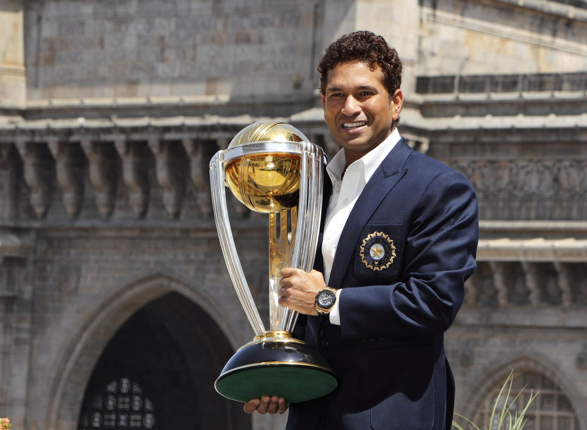
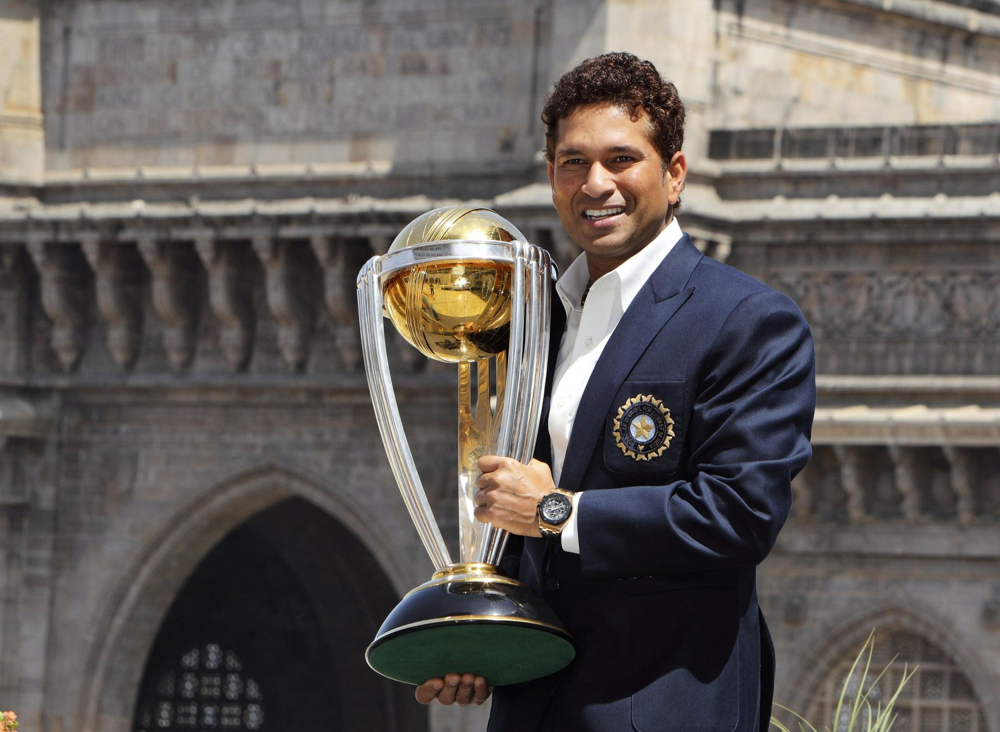
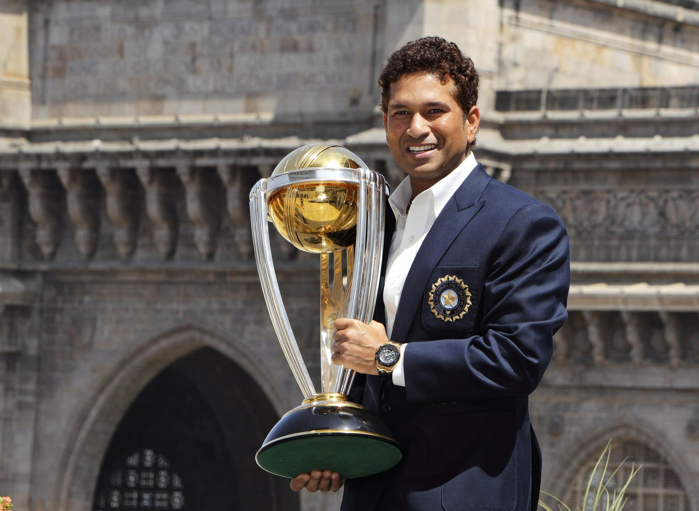

Hi I'm
SACHIN RAMESH TENDULKAR
Indian cricketer
 

Indian cricketer

Sachin Tendulkar was born on April 24, 1973. Bombay Mumbai, India.The former Indian international cricketer who led the country to victory. He is recognised as one of the best batsmen in cricket history. He is the all-time leading run-scorer in both Test and ODI cricket, with over 15,000 and 18,000 runs, respectively.
Throughout his 30-year career, he has performed miracles for the Indian cricket team, which is why many people see him as the ‘Master Blaster’. As a result of his remarkable batting abilities, he rose to become known as the ‘God of Cricket’.
In 2013, Sachin Tendulkar resigned from his post from international cricket. Just 15 when he stepped out on to the field to represent India, Sachin is today synonymous with everything Cricket. As a result of his exploits on the field, and conduct off the field, he transformed from cricketer to icon to role model for multiple generations; earning the moniker ‘Master Blaster’ at the age of just 24. Loved and adored by fans across the world from every community, age and gender, he was one of the first sportsmen to truly become a global Cricket sensation; someone who brought Cricket into the spotlight every time he took to the crease.